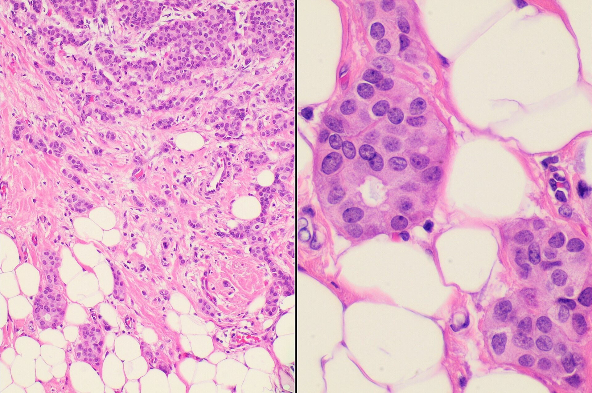
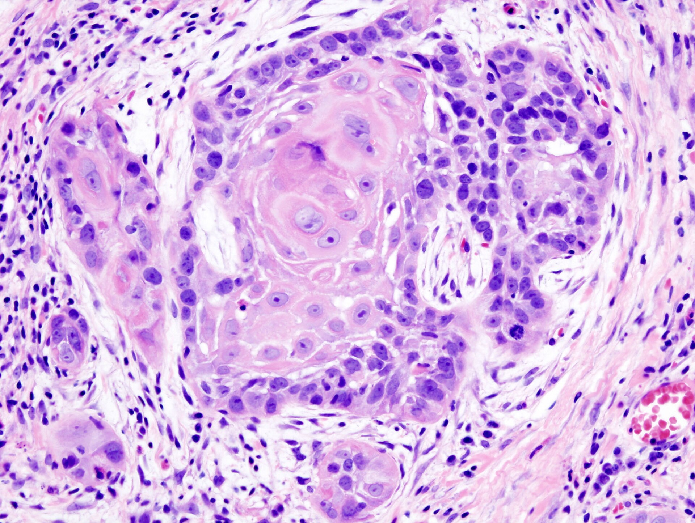
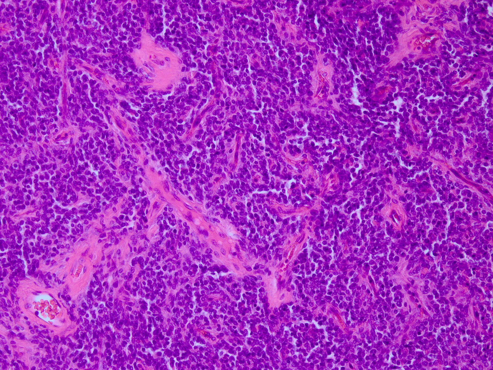
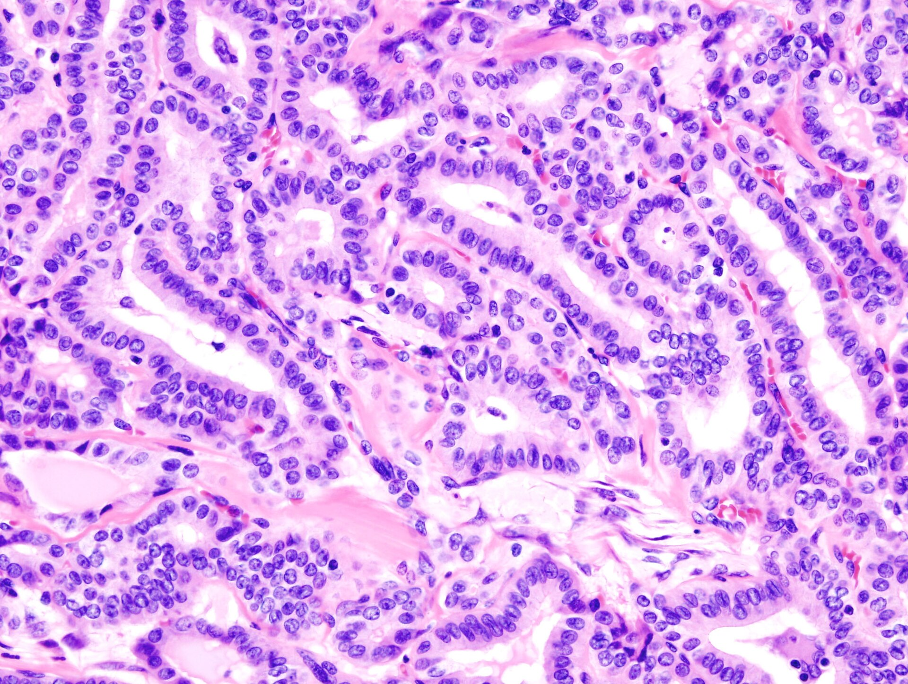

A multimodal deep learning framework for pan-cancer diagnosis that maintains clinical accuracy when one or more diagnostic modalities are missing.
Traditional multimodal AI models presuppose that every patient case includes all high-throughput molecular assays simultaneously. In clinical oncology, modalities are routinely missing due to assay costs, biopsy tissue degradation, or assay-specific laboratory failures.
Integrates transcriptomic gene expression (mRNA), microRNA regulation (miRNA), somatic copy number alterations (CNV), and epigenetic DNA methylation across 9,844 molecular features into a unified latent space.
Accurate multi-class subtype classification across BRCA (Breast), HNSC (Head/Neck), LGG (Brain Glioma), and THCA (Thyroid).
Outperforming single-modality baselines (CNV: 85.2%, Methy: 93.4%) with cross-attention token aggregation.
Benchmarked across all 15 combinatorial modality-drop conditions (C0–C14) on 2,263 TCGA patient samples, retaining robust diagnostic capabilities even under severe single-stream data starvation.




Upload patient multi-omic assays (CSV/TSV), toggle available diagnostic modalities, or evaluate verified test cohort samples. The deep multimodal cross-attention network dynamically imputes missing streams using learnable tokens and outputs true cancer subtype classifications.
High-dimensional assays expect hundreds or thousands of numerical values. File upload is the recommended clinical format.
You can paste comma-separated floats (e.g. 1.42, -0.35, ...) or a JSON dictionary of feature names and values.
This application is a machine-learning research framework developed for pan-cancer classification under incomplete clinical data. Predictions and softmax probability scores are intended solely for academic research and model evaluation. They do not constitute medical diagnoses and must not be used to direct clinical decisions or patient treatment. Model diagnostic certainty may vary significantly under high missingness conditions with limited empirical evidence.
The architecture decouples modality encoding from fusion, injecting learnable missing tokens whenever a clinical test is unobserved, preventing catastrophic representation collapse.
WSI gigapixel patches are mapped with Vision Transformers; RNA-seq high-dimensional profiles pass through Sparse SNNs; clinical EHR tables use TabNet embeddings.
When any diagnostic input is absent, stochastic attention masks substitute the missing stream with dynamic learned query vectors conditioned on present streams.
A multi-head cross-modal transformer dynamically models inter-modality dependencies, weighting the most informative available signals without rigid concatenation.
A classification head outputs pan-cancer subtype logits paired with Bayesian Dirichlet uncertainty estimation to alert clinicians when inputs are insufficient.
Evaluated on the Cancer Genome Atlas (TCGA) pan-cancer repository across 4 primary malignancies (BRCA, HNSC, LGG, THCA) under 15 systematically evaluated missing-modality regimes (C0–C14).
Patient Cohort Samples
Target Pan-Cancer Subtypes
Synchronized Omic Modalities
Proposed cross-attention framework matches near-perfect complete classification while maintaining exceptional single-modality fallback.
mRNA (3,217), miRNA (383), CNV (3,105), DNA Methylation (3,139) with strict zero-leakage 70/15/15 stratified partitioning.
Comparing classification performance between Baseline S1 (Complete Only) vs. Proposed Strategy S2 (Modality Dropout with Learned Mask Tokens).
| Evaluation Condition | mRNA | miRNA | CNV | Methy | Baseline S1 F1 | Proposed S2 F1 | Robustness Delta |
|---|---|---|---|---|---|---|---|
| C0: Complete (Gold Standard) | Present | Present | Present | Present | 99.56% | 99.50% | Optimal |
| C1: Transcriptomics Missing | Missing | Present | Present | Present | 99.39% | 99.45% | +0.06% |
| C4: Epigenetics Missing | Present | Present | Present | Missing | 99.41% | 99.41% | Parity |
| C11: DNA Methylation Only | Missing | Missing | Missing | Present | 93.37% | 93.37% | Fallback |
| C12: Genomic CNV Only (Stress Test) | Missing | Missing | Present | Missing | 65.60% | 74.12% | +8.52% Gain |
Bachelor of Computer Applications (BCA) Major Project · Faculty of Computer Technology, Assam down town University.
Assistant Professor · Bachelor of Computer Application. Research direction, experimental methodology, and technical guidance.